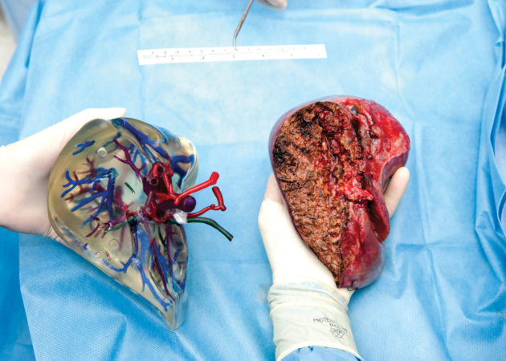
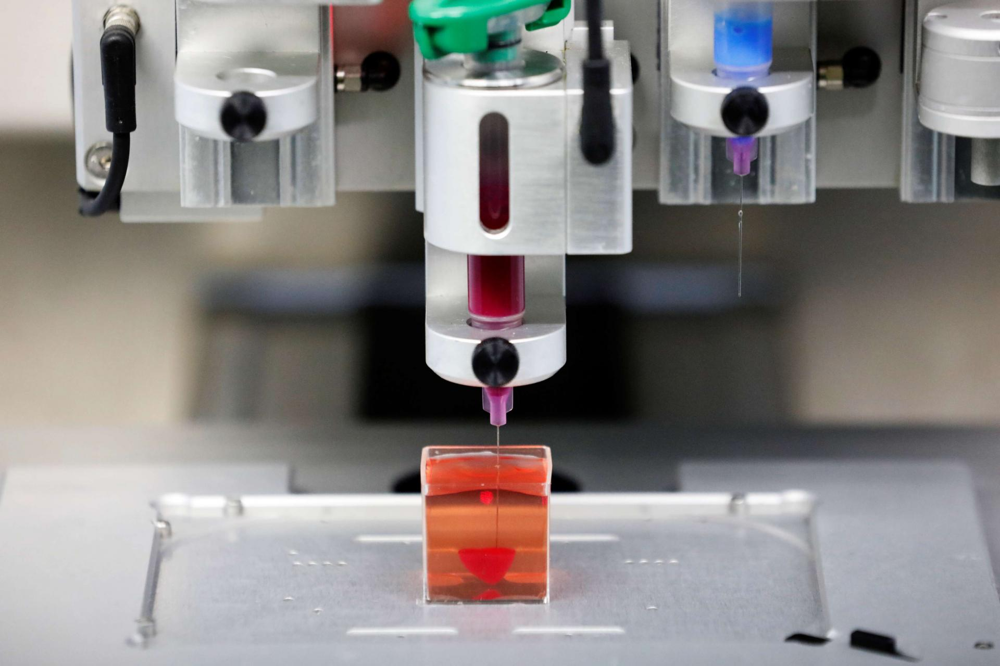

Nearly 14,000 people are on the liver transplant list, according to the American Liver Foundation. Experts say about 10% of them will die or become too sick for transplant before it’s their turn.This is the story of a Salt Lake City mother and son. She gave him life, and now he is doing the same. It’s a surgery with a unique twist.Gwen Finlayson’s autoimmune hepatitis led to cirrhosis years ago.“A lot of fatigue, and that really is the biggest thing, not being able to have the energy to do the things you want to do,” she said of the symptoms.

She was on the liver transplant list. Then, her son, Brandon, offered to donate part of his.“She needed this, and for the couple months of discomfort, that was well worth it,” he said.“The reason why a live donation is important to do before the patients get too sick is because you’re not doing a full liver, you’re only doing 40% to 60%,” said Dr. Manuel Rodriguez-Davalos, the director of the living liver donor transplant program at Intermountain Healthcare Transplant Services.Gwen is petite, so Rodriguez-Davalos took Brandon’s smaller left lobe, which is usually done for adolescents. It’s the first time it’s been done between adults in Utah.The family and surgeons knew exactly how both livers looked before transplant. The team used 3D imaging to print models.

“The fact that we’re able to kind of go over step by step, it’s just so much easier than just seeing a CAT scan on the screen,” Rodriguez-Davalos said.“Beforehand, we could see her liver, we could see my liver, and we could see exactly how they were going to cut it open,” Brandon said.Brandon was home in five days, Gwen in nine. Both their livers grew back to functioning size.Now, Gwen is looking ahead and thankful every day.“When I have milestones, when things are great, when things are going well, I try to reach out and tell him, because I want him to know how grateful I am,” she said.Rodriguez-Davalos plans to make 3D models of Brandon’s and Gwen’s livers in a year to see how they’ve grown.Intermountain Transplant Services recently got a grant to create a 3D-printed liver library. Rodriguez-Davalos says models of donor and recipient livers will help educate patients and surgeons in training.
Leave a comment